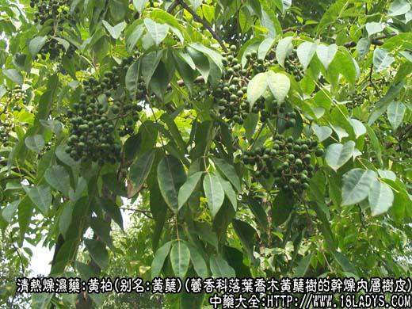
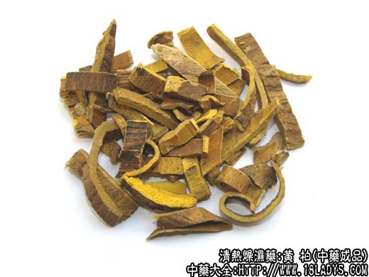
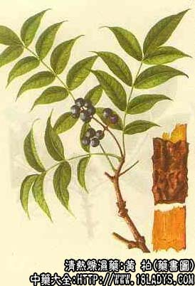

黄柏为常用中药。始载《神农本草经》，列为中品，原名“蘖木”。黄蘖之名首见于《名医别录》。现今通常简写作黄柏。商品有关黄柏和川黄柏二大类。京津地区市售为关黄柏。
别名：黄蘖、黄柏。
来源：关黄柏：为芸香科植物落叶乔木黄蘖树（黄波罗树）除去粗木栓皮的干燥内层树皮。有野生及栽培。
川黄柏：为芸香科植物落叶乔木黄蘖树属，黄皮树及其变种秃叶黄皮树，峨嵋黄皮树，云南黄皮树，镰刀黄皮树等除去栓皮的干燥内层树皮，有野生及栽培。
产地：关黄柏，主产于辽宁、吉林、黑龙江。此外内蒙、山西、河北等省亦有分布。
川黄柏：主产于四川、贵州、云南、陕西、湖北。此外湖南、甘肃、广西等省亦有分布。
性状鉴别：关黄柏：呈薄板片状，长宽不一，厚约1.5～5毫米，外表面污黄色或淡棕色。有不规则的纵顺细浅沟纹和崩裂。内表面淡棕黄色或稍带淡绿色，略平坦，纵顺丝纹细密。质稍轻松，易折断，断面鲜黄色稍带绿色。呈层片状，显纤维性。气微，味苦。嚼之产生粘滑液。
川黄柏：呈板片或卷筒状，长宽不一，厚2～5毫米，外表面棕褐色较平坦，内表面污黄色或棕黄色。质较坚硬，折断面鲜黄色，显纤维性。余与关黄柏相同。
以上两类黄柏均以皮层厚，呈板片状、无栓皮、外表面皮淡棕黄色、内色鲜黄者为佳。
主要成分：含小蘖硷、黄柏桐、黄柏内酯、白鲜内酯。
药理作用：
1、抗菌：体外试验对葡萄球菌抑制作用最强，对痢疾杆菌、白喉杆菌、肺炎球菌、脑膜炎球菌和链球菌也有较强的杀菌作用。
2、抗真菌：作用类似黄连，但效力较弱。
3、收敛消炎：动物实验证实黄柏可减轻局部充血。
此外，还有利尿、健胃、外用促进皮下溢血吸收等作用。
炮制：切丝。生用盐水炒，酒喷炒、炒炭。
性味：苦寒。
归经：入肾，膀胱经。
功能：泻肾火，清湿热，解疮毒。
主治：骨蒸劳热，盗汗，遗精，黄疸，尿闭，淋浊，带下。足膝肿痛，痈肿疮疡等症。
临床应用：
1、用于治疗“湿热”下注而成的足痿（大致相同于感染性周围神经炎、脊髓神经根炎等），下肢瘫痪麻木，有心胸烦热，口燥咽干，大便燥结等症状者，以黄柏配苍术清湿热，即二妙散，再加牛膝名三妙散，效果更好，可以此为基本方，再随症加用适当药物。
3、用于治疗湿热黄疸（全身发黄、发热，有头汗）。可配栀子，方如栀子柏皮汤，但常要加配其它清热燥湿药。
4、用于治疗阴虚火旺，潮热骨蒸。可配知母以泻肾火，方如知柏八味丸、大补阴丸。
5、用于治疗湿热所致的黄浊白带。可配芡实、白果等，方如易黄汤。
6、用于治疗皮肤湿热（疮疖、湿疹等）。可配苦参、荆芥、苏叶等内服兼外洗，或湿敷。也可用黄柏粉3g，配青黛粉3g、石膏粉30g，用麻油调搽湿疹。
用量：内服3～12g，外用适量。
附：黄柏、黄芩、黄连三者功用大同小异，且常互相配合同用。其区别是：黄芩善泻肺火（治肺热咳嗽），黄连善泻胃火（消痞止呕），黄柏善治下部湿热（治脚气足痿）。
处方举例：
1、三妙散《医学正宗》：黄柏9g、苍术9g、牛膝9g，研末内服，或入汤剂配合其它药。
2、栀子柏皮汤《伤寒论》：栀子6g、黄柏6g、甘草3g，水煎服。
3、大补阴丸《丹溪心法》：黄柏12g、知母12g、熟地18g、龟板18g，水煎服（如能加用猪脊髓更好）。
4、易黄汤《衷中参西录》：黄柏6g、白果12g（打）、芡实15g、车前子6g（布包），水煎服。
注：1、另有朝鲜进口黄柏，性状与黄柏相同。
2、据《中药志》第三册黄柏项下记述，我国某些地区（如青海、河南、四川、山西等地）以小蘖科小蘖属和十大功劳属多种植物的树皮层，去掉栓皮代黄柏用，习称山黄柏或土黄柏。本品呈较小的薄板片状或卷筒状厚1～2毫米，外表面棕黄色，两面均显纵顺细丝纹。质轻松脆，易折断。断面黄绿色，不呈层片状，放大镜下观察呈规律的长方格状，格内空虚如网眼。气微，味甚苦，嚼之不产生粘滑感。其疗效是否与黄柏相同尚待研究。